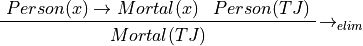
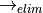
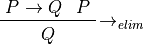
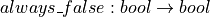

6. Logic in Computer Science¶
Logic is the study of the nature, forms, and processes of defensible reasoning. The central question is what propositions can we reasonably accept as being true? In more detail, how can we reason from what we already know or accept to be true to new propsitions, with reasonable confidence that these will also be true.
Today we recognize that rigorous reasoning falls into two categories: inductive and deductive. Inductive reasoning draws conclusions (new propositions) by generalizing from examples (observations). The sun’s come up every day so far, so it will come up again tomorrow. The only swans we have ever seen are white, so there are no black swans. These are examples of inductive reasoning.
Unless one had made all possible observations (seen the sun come up every day for all eternity; seen every swan that ever was or will be), then inductive reasoning is not sound: it is not guaranteed to produce results that are certain to be true.
Inductive Reasoning¶
Inductive reasoning is a form of reasoning where one draws conclusions based on generalization from examples. The parable of the Black Swans illustrates the concept well. Until 1697, Europeans had never seen a black swan. They had only seen white swans. On the basis of these many examples, they generally accepted as true a long-standing belief that black swans simply do not exist. Their confidence in their conclusion was so strong that black swan was commonly used as an idiom meaning an impossibility.
Yet in that fateful year, 1697, Dutch explorers venturing to Western Australia discovered the impossible: they were the first Europeans to see with their own eyes a real black swan. The prior believe of all of Europe in the non-existence of black swans was shattered by a single observation.
Inductive reasoning can be extremely useful. It can lead to important hypotheses backed by significant bodies of evidence. But this form of reasoning not sound. No matter how many examples have been observed (unless it is all of them), inductive reasoning can yield conclusions that just aren’t true. Jonh Stuart Mill, paraphrasing David Hume, said ““No amount of observations of white swans can allow the inference that all swans are white, but the observation of a single black swan is sufficient to refute that conclusion.”
In the software development field, concluding that a system satisfies its specification based on the results of testing the systen on some but not all of its permitted inputs is a form of inductive reasoning. The reasoning goes like this: We’ve done a whole bunch of testing and we haven’t found a bug yet, so we’ll take it as true that the program satsifies its specification.
Most software systems have more possible inputs that there are atoms in the universe, so testing all possible inputs (exhaustive testing) is usually infeasible in practice. One can only test most programs on subsets of their permitted input values. Drawing conclusions about the correctness of code in general on the basis of not yet having found an input that causes an error is akin to concluding that there are no black swans (bugs in code) because one has only ever seen white swans (good behaviors) in practice.
Following Hume and Mill, the famous Dutch software theorist, Edsgar Dijkstra (pronounced DIKE-stra), famously stated that, “Program testing can be a very effective way to show the presence of bugs, but is hopelessly inadequate for showing their absence.”
Much software is developed and used in practice without and kind of precise, documented specification. Developing software intuitively is often a practical, affordable, satisfying, and effective approach. In many situations, it’s unclear to anyone before the software starts to be produced what exactly is needed; and there is often acceptable risk in producing and using software developed in an intuitive, craft-like manner.
Indeed, writing software, like writing novels or poems, is often an exploration: you discover something wonderful by writing it, without a real understanding of exactly how things will turn out. An experienced carpenter can similarly build a beautiful house, often collaborating with someone who needs that house, with little more than a broad plan in mind, with justifiable confidence that issues that might arise can be dealt with as things go along.
Software testing is often a practical, effective approach to producing good enough software in this manner. In general it won’t prove the absence of bugs in code, but it can provide acceptably strong evidence in support of hypotheses (always with some risk of being proven wrong) of suitability for use.
Deductive Reasoning¶
The alternative to (often useful but) unsound inductive reasoning is deductive reasoning. Deductive reasoning provides absolute assurance of the truth of given conclusions, provided that the premises on which the conclusions are based are valid.
The earliest surviving results in deductive logic are due to the Greek philosopher, Aristotle. He formulated sound reasoning as employing what he called syllogisms. These are rules that permit one to deduce conclusions about what statements are true from premises, which are statements that one has already accepted as true.
Here is an example of a syllogistic argment. Premise 1: All people are mortal. Premise 2: Thomas Jefferson is a person. Conclusion: Thomas Jefferson (TJ) is mortal. The reasoning is unassailable. There is no remaining doubt. If the premises are true, then the conclusion must be true as well. Deductive reasoning, unlike inductive reasoning, is sound.
Aristotle’s logic was based on a catalog of such syllogisms. The one that we just used is known as modus ponens. The schema for such an argument is that if every X has a property P and T is an X then T, in particular, must have property P.
Modern mathematical (or symbolic) logic was developed by 19th and early 20th century philosophers including the American philosopher, Charles Saunders Peirce (pronounced “purse”), Gottlieb von Frege, George Boole, and others. It took from Aristotle a concern for sound reasoning, while adopting rigorous notations of modern mathematics.
Here are two equivalent ways using modern notation that one might use
to formulate Aristotle’s syllogism as it relates to Thomas Jefferson.
Here’s one:  . This expression is called a sequent. It
has two parts separated by a turnstile,
. This expression is called a sequent. It
has two parts separated by a turnstile,  . To
the left of the turnstile is a list of premises. To the right is a
conclusion. The first premise, an implication, can be read as
saying “x being a person implies that x is mortal,” or, in a more
natural manner of speaking, “if x is a person then x is mortal.” The
second premise can be read as “TJ is a person.” The conclusion then
states, “TJ is mortal.”
. To
the left of the turnstile is a list of premises. To the right is a
conclusion. The first premise, an implication, can be read as
saying “x being a person implies that x is mortal,” or, in a more
natural manner of speaking, “if x is a person then x is mortal.” The
second premise can be read as “TJ is a person.” The conclusion then
states, “TJ is mortal.”
Sometimes a vertical rather than a horizonal notation is used to say the same thing.

In this rendering of the very same sequent, the premises are written above the line, and the conclusion below. To the right of the sequent, we’ve added an annotation, , to document which rule of inference we have used to deduce the conclusion from the premises. In this case the rule we;ve used is called implication elimination. This rule formalizes modus ponens. If P and Q are any propositions, and if we accept as premises that if P is true then Q is true and that P is true then the rule allows us to conclude that Q must be true. We can write the rule in a general form like this, where P and Q here stand for any propositions.

Deductive reasoning, then, is based on the use of inference rules to move from sets of premises that are accepted as true to conclusions that must therefore be true. Deduction removes all doubt about the truth of conclusions. If given premises are true and sound inference rules are used then conclusions deduced from the premises must be true. If for example we accept as true that all people are mortal and that Thomas Jefferson is a person, then there can be no remaining doubt that Thomas Jefferson is also mortal.
Both inductive and deductive reasoning play vital roles in science and engineering, in general, in computer science, more specifically, and in software development, in particular. A major question in software development is whether a program correctly implements a specification. To conclude that it does based on observations of currect behavior when it is testing on some but not all possible inputs is a kind of inductive reasoning. One moves from limited observations (no bugs seen so far) to broader conclusion (no bugs) by generalizing from limited observations. However, any such conclusion leaves considerable room for doubt. Maybe not all bugs have been found, after all. Drawing conclusions based on the results of software testing is thus also said to be unsound.
By contrast, constructing a mathematical proof that a program behaves as specified for all possible inputs uses deductive reasoning to remove any remaining doubt. Things can still go wrong, such as the hardware on which software runs being faulty, or the proof being wrong, but as long as such a proof it good, then any remaining doubt is eliminated entirely.
Formal verification is the term that describes the use of deductive logic, and in particular the construction of proofs of propositions that programs behave as specified. Formal verification is used in cases where very high levels of justificable confidence in the correct operation of software is required. It is thus vital to the engineering of software for life-critical medical devices, nuclear weapons, power plants, financial systems, and critical infrastructure, e.g., for air traffic control, flight avionics, and automated vechicles. The formal verfication of software can, and increasingly does, play a vital role in many sectors of the economy. Proofs of key propositions about the behaviors of programs are a gold standard for high levels of assurance of the fitness of software for intended uses.
Deductive logic and proof techniques are even more broadly important in computer science. Develoeprs of new algorithms formulate and prove propositions about their runtime and memory use (“space”) complexity. Cryptologists formulate and prove security properties of methods for protecting sensitive information. Networking researchers prove that communication protocols never lose information without providing an alert. People who develop the software that runs major data centers (underpinning such services as Amazon, Google, and Netflix) formuate and prove properties about the protocols used to maintain consistent copies of data across multiple data centers, as a safeguard against loss of information due natural disasters, human error, or malicious attacks.
To understand formal verification, and thus to understand the state of the art in software development, and to gain fluency in the science of computer science more generally, genuinely requires an understanding of mathematical logic and proofs. This course provides an introduction to these topics using formal specification and verification as one of several areas in computer science where these ideas have important applications.
So far in this course you have seen how mathematical logic can be used to write formal specifications of the required behaviors of programs and to verify that programs exhibit such behaviors for all possible inputs. The big example we’ve developed so far is a formally specified and verified program to efficiently compute fibonacci numbers. We’ve also seen how an automated verification tool (Dafny), which is based on deductive logic and proof techniques, can formally verify software by generating proofs that you as a programmer often never even see.
While both inductive and deductive reasoning play important roles in computer science, it is deductive reasoning that that is most widely employed across the field. That is because we often want to be sure about properties of programs, algorithms, protocols, kids of problems, and so forth.
We hope that the course so far has helped you see that deductive logic and proof techniques are deeply important in computer science and in software development, in particular. More than academic abstractions, they really are vital tools of the trade. Indeed, so central are logic and proofs to computer science that logic has been called the calculus of computer science. That it, logic plays a role in computer science akin to that of the calculus in engineering and the natural sciences.
So with formal specification and verification of efficient, imperative programs as motivating example now in the bag, it’s time to start to open the black box and to see in more detail what it means to be a logic, a proposition, an interpretation, an inference rule, a proof.
The question of what ways of reasoning are defensible, rather than fallacious, has been explored for millenia.
The early Greek philosopher, Aristotle, is generally credited with having developed one of the first rigorous accounts of logically defensible reasoning.
uses deductive reasoning, based on the construction of mathematical proofs that a program behaves as specified for all possible inputs, even when there might be an astronomical or even infinite number of possible inputs.
Inductive and Deductive Reasoning¶
Dafny supports a range of abstract data types akin to those found in widely used, industrial imperative programming languages and systems, such as Python and Java. In this chapter, we introduce and briefly illustrate the use of these types. The types we discuss are as follow:
- bool, supporting Boolean algebra
- int, nat, and real types, supporting exact arithmetic (unlike the numerical types found in most industrial languages
- char, supporting character types
- set<T> and iset<T>, polymorphic set theory for finite and infinite sets
- seq<T> and iseq<T>, polymorphic finite and infinite sequences
- string, supporting character sequences (with addtional helpful functions)
- map<K,V> and imap<K,V>, polymorphic finite and infinite partial functions
- array<T>, polymorphic 1- and multi-dimensional arrays
Boolean Algebra¶

 |
 |
|---|---|
| true | true |
| false | true |

|
 |
|---|---|
| true | false |
| false | false |

|
|
|---|---|
| true | true |
| false | false |

|
 |
|---|---|
| true | false |
| false | true |

|
 |
 |
|---|---|---|
| true | true | true |
| true | false | false |
| false | true | false |
| false | false | false |

|
|
 |
|---|---|---|
| true | true | true |
| true | false | true |
| false | true | true |
| false | false | false |

|
|
 |
|---|---|---|
| true | true | false |
| true | false | true |
| false | true | true |
| false | false | true |

|
|
 |
|---|---|---|
| true | true | false |
| true | false | false |
| false | true | false |
| false | false | true |

|
|
 |
|---|---|---|
| true | true | false |
| true | false | true |
| false | true | true |
| false | false | false |

|
|
 |
|---|---|---|
| true | true | true |
| true | false | false |
| false | true | true |
| false | false | true |

|
|
 |
|---|---|---|
| true | true | true |
| true | false | true |
| false | true | false |
| false | false | true |
The bool abstract data type (ADT) in Dafny provides a bool data type with values, true and false, along with the Boolean operators that are supported by most programming langauges, along with a few that are not commonly supported by industrial programming languages and systems.
Here’s a method that computes nothing useful and returns no values, but that illustrates the range of Boolean operators in Dafny. We also use the examples in this chapter to discuss a few other aspects of the Dafny language.
method BoolOps(a: bool) returns (r: bool) // bool -> bool
{
var t: bool := true; // explicit type declaration
var f := false; // type inferred automatically
var not := !t; // negation
var conj := t && f; // conjunction, short-circuit evaluation
var disj := t || f; // disjunction, short-circuit (sc) evaluation
var impl := t ==> f; // implication, right associative, sc from left
var foll := t <== f; // follows, left associative, sc from right
var equv := t <==> t; // iff, bi-implication
return true; // returning a Boolean value
}
Arithmetic¶
Methods aren’t required to return results. Such methods do their jobs by having side effects, e.g., doing output or writing data into global variables (usually a bad idea). Here’s a method that doesn’t return a value. It illustrates numerical types, syntax, and operations.
method NumOps()
{
var r1: real := 1000000.0;
var i1: int := 1000000;
var i2: int := 1_000_000; // underscores for readiability
var i3 := 1_000; // Dafny can often infer types
var b1 := (10 < 20) && (20 <= 30); // a boolean expression
var b2 := 10 < 20 <= 30; // equivalent, with "chaining"
var i4: int := (5.5).Floor; // 5
var i5 := (-2.5).Floor; // -3
var i6 := -2.5.Floor; // -2 = -(2.5.Floor); binding!
}
Characters¶
Characters (char) are handled sort of as they are in C, etc.
method CharFun()
{
var c1: char := 'a';
var c2 := 'b';
// var i1 := c2 - c1;
var i1 := (c2 as int) - (c1 as int); // type conversion
var b1 := c1 < c2; // ordering operators defined for char
var c3 := '\n'; // c-style escape for non-printing chars
var c4 := '\u265B'; // unicode, hex, "chess king" character
}
To return a value from a method, assign to the return parameter Note: functions have colon then return type, whereas methods use the “returns” keyword with a return parameter list
method ReturnExample() returns (retval: int)
{
retval := 10;
}
Methods can return multiple values.
method ReturnExample2() returns (x: int, y:int)
{
x := 10;
y := 20;
}
The return keyword can be used to return immediatey
method ReturnExample3() returns (x: int)
{
x := 5; // don't "var" decare return variable
return; // return immediately
x := 6; // never gets executed
}
Set Theory¶
Polymorphic finite and infinite set types: set<T> and iset<T>. T must support equality. Values of these types are immutable.
method SetPlay()
{
var empty: set<int> := {};
var primes := {2, 3, 5, 7, 11};
var squares := {1, 4, 9, 16, 25};
var b1 := empty < primes; // strict subset
var b2 := primes <= primes; // subset
var b3: bool := primes !! squares; // disjoint
var union := primes + squares;
var intersection := primes * squares;
var difference := primes - {3, 5};
var b4 := primes == squares; // false
var i1 := | primes |; // cardinality (5)
var b5 := 4 in primes; // membership (false)
var b6 := 4 !in primes; // non-membership
}
Sequences¶
Polymorphic sequences (often called “lists”): seq<T>. These can be understood as functions from indices to values. Some of the operations require that T support equality. Values of this type are immutable.
method SequencePlay()
{
var empty_seq: seq<char> := [];
var hi_seq: seq<char> := ['h', 'i'];
var b1 := hi_seq == empty_seq; // equality; !=
var hchar := hi_seq[0]; // indexing
var b2 := ['h'] < hi_seq; // proper prefix
var b3 := hi_seq < hi_seq; // this is false
var b4 := hi_seq <= hi_seq; // prefix, true
var sum := hi_seq + hi_seq; // concatenation
var len := | hi_seq |;
var Hi_seq := hi_seq[0 := 'H']; // update
var b5 := 'h' in hi_seq; // member, true, !in
var s := [0,1,2,3,4,5];
var s1 := s[0..2]; // subseqence
var s2 := s[1..]; // "drop" prefix of len 1
var s3 := s[..2]; // "take" prefix of len 2
// there's a slice operator, too; later
}
Character Strings¶
Dafny has strings. Strings are literally just sequences of characters (of type seq<char>), so you can use all the sequence operations on strings. Dafny provides additional helpful syntax for strings.
method StringPlay()
{
var s1: string := "Hello CS2102!";
var s2 := "Hello CS2102!\n"; // return
var s3 := "\"Hello CS2102!\""; // quotes
}
Partial Functions (Maps)¶
Dafny also supports polymorphic maps, both finite (map<K,V>) and infinite (imap<K,V>). The key type, K, must support equality (==). In mathematical terms, a map really represents a binary relation, i.e., a set of <K,V> pairs, which is to say a subset of the product set, K * V, where we view the types K and V as defining sets of values.
method MapPlay()
{
// A map literal is keyword map + a list of maplets.
// A maplet is just a single <K,V> pair (or "tuple").
// Here's an empty map from strings to ints
var emptyMap: map<string,int> := map[];
// Here's non empty map from strings to ints
// A maplet is "k := v," k and v being of types K and V
var aMap: map<string,int> := map["Hi" := 1, "There" := 2];
// Map domain (key) membership
var isIn: bool := "There" in aMap; // true
var isntIn := "Their" !in aMap; // true
// Finite map cardinality (number of maplets in a map)
var card := |aMap|;
//Map lookup
var image1 := aMap["There"];
// var image2 := aMap["Their"]; // error! some kind of magic
var image2: int;
if ("Their" in aMap) { image2 := aMap["Their"]; }
// map update, maplet override and maplet addition
aMap := aMap["There" := 3];
aMap := aMap["Their" := 10];
}
Arrays¶
Dafny supports arrays. Here’s we’ll see simple 1-d arrays.
method ArrayPlay()
{
var a := new int[10]; // in general: a: array<T> := new T[n];
var a' := new int[10]; // type inference naturally works here
var i1 := a.Length; // Immutable "Length" member holds length of array
a[3] := 3; // array update
var i2 := a[3]; // array access
var seq1 := a[3..8]; // take first 8, drop first 3, return as sequence
var b := 3 in seq1; // true! (see sequence operations)
var seq2 := a[..8]; // take first 8, return rest as sequence
var seq3 := a[3..]; // drop first 3, return rest as sequence
var seq4 := a[..]; // return entire array as a sequence
}
Arrays, objects (class instances), and traits (to be discussed) are of “reference” types, which is to say, values of these types are stored on the heap. Values of other types, including sets and sequences, are of “value types,” which is to say values of these types are stored on the stack; and they’re thus always treated as “local” variables. They are passed by value, not reference, when passed as arguments to functions and methods. Value types include the basic scalar types (bool, char, nat, int, real), built-in collection types (set, multiset, seq, string, map, imap), tuple, inductive, and co-inductive types (to be discussed). Reference type values are allocated dynamically on the heap, are passed by reference, and therefore can be “side effected” (mofified) by methods to which they are passed.